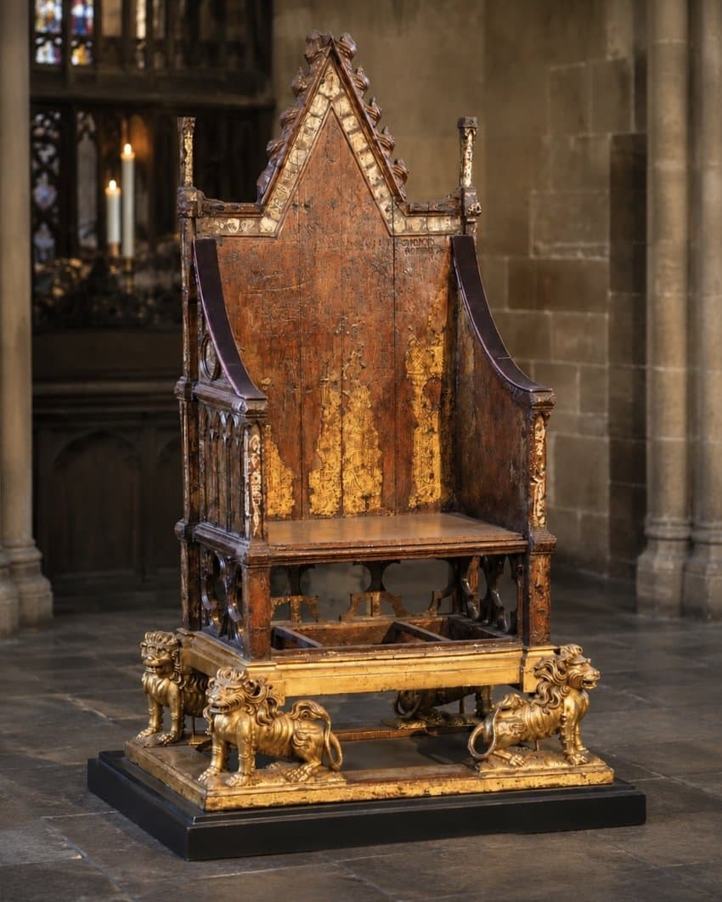
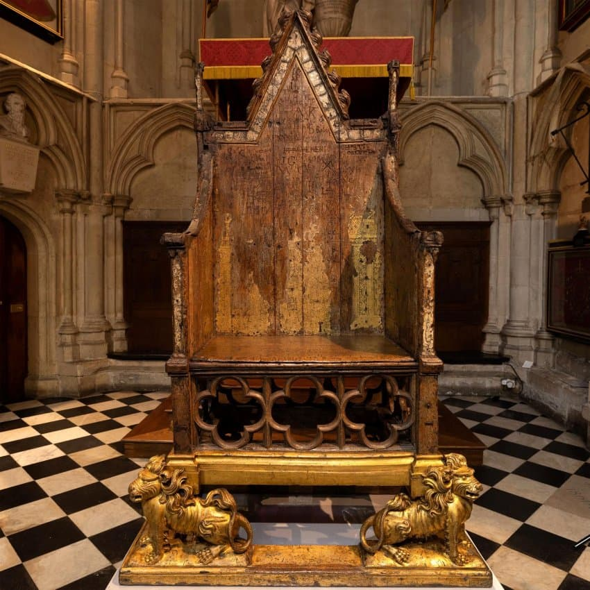
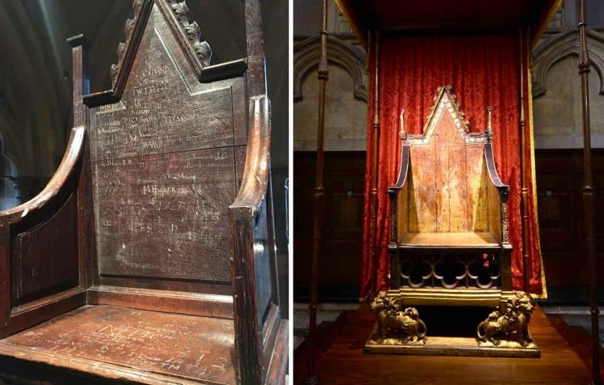
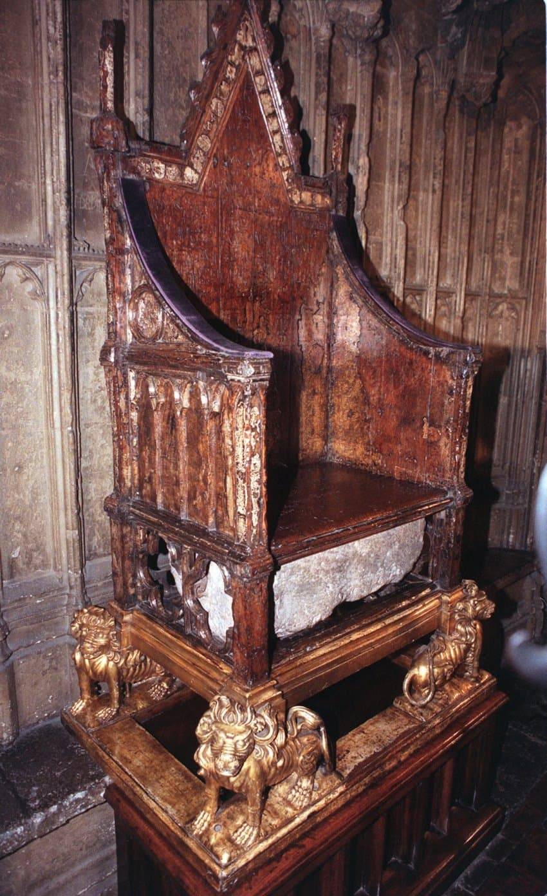
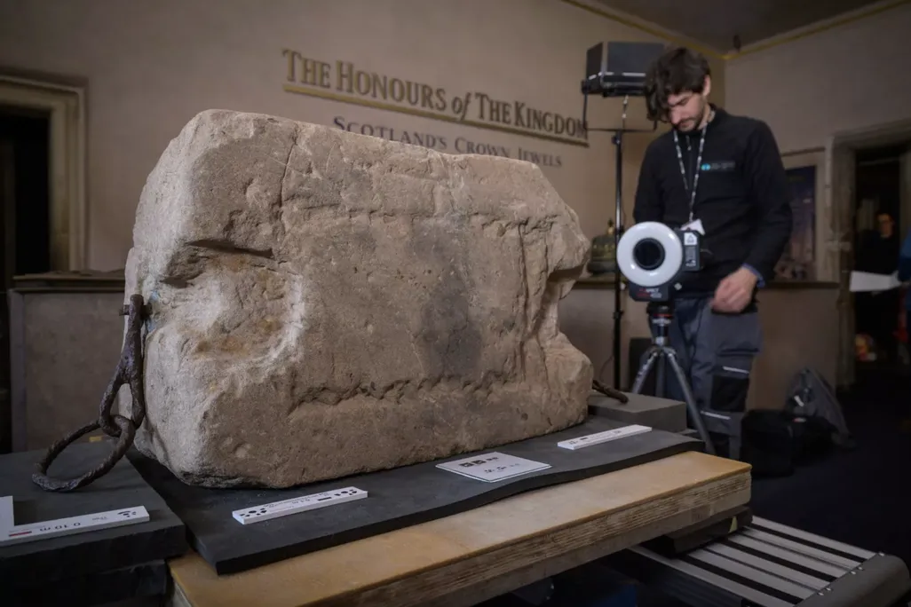
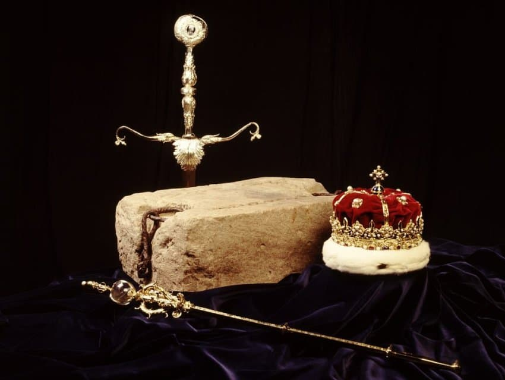
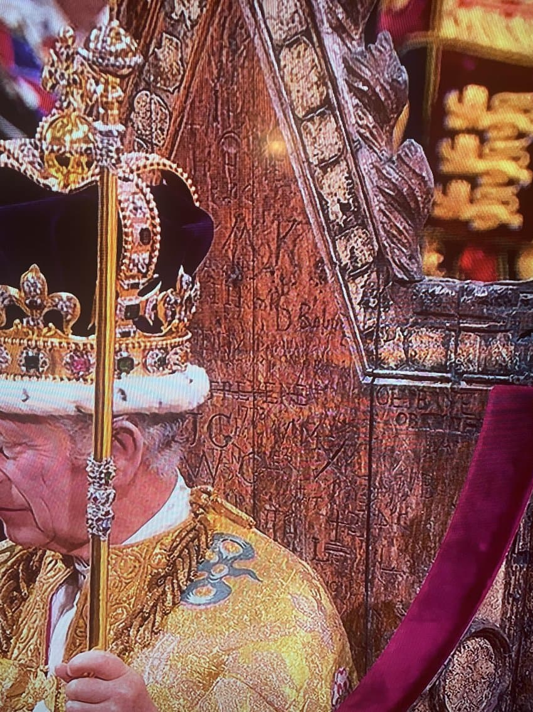

1300년경 에드워드 1세의 명령으로 만든 의자
원래 금박으로 치장되어있었지만 세월이 흐르며 닳아 없어짐...
하지만 그것도 세월을 상징하는 좋은 뜻...!



원래는 스코틀랜드에서 에드워드가 약탈해온 '운명의 돌'이 의자 아래 있었는데 지금은 스코틀랜드와의 관계를 고려해 없어짐...

잘 보면 낙서 개많음 ㅋㅅㅋ
댓글
수집 당시 댓글 59개
ㅇㅇ · 11.27 17:03:32
· ㅇㅇ · 11.28 09:18:38
· ㅇㅇ · 11.28 09:19:40
· ㅇㅇ · 11.28 09:19:49
ㅇㅇ · 11.27 17:03:44
· 수류탄이야 · 11.27 17:04:45
· 수류탄이야 · 11.27 17:05:07
· 수류탄이야 · 11.27 17:05:16
· 성아 · 11.27 17:11:06
· ㅇㅇ · 11.27 17:14:58
· ㅇㅇ · 11.28 09:10:01
· ㅇㅇ · 11.28 15:13:32
ㅇㅇ · 11.27 17:06:02
트리니티호감고닉미카 · 11.27 17:06:32
ㅇㅇ · 11.27 17:06:50
· 틑갤러3 · 11.28 08:44:52
· ㅇㅇ · 11.28 15:22:51
캘리포니아호두가싼이유 · 11.27 17:07:17
ㅇㅇ · 11.27 17:08:18
· ㅇㅇ · 11.28 08:42:26
· ㅇㅇ · 11.28 08:52:47
· ㅇㅇ · 11.28 08:53:22
· ㅇㅇ · 11.28 14:00:07
· 서차단 · 11.28 16:10:54
디비자 · 11.27 17:09:32
국제숏컷톰보이학회장 · 11.27 17:24:02
· Westmountain · 11.28 08:47:52
히이잉 · 11.28 08:57:13
ㅇㅇ · 11.28 09:15:52
ㅇㅇ · 11.28 09:19:10
Proletarier · 11.28 09:19:18
ㅇㅇ · 11.28 09:24:27
공정성장 · 11.28 09:27:16
· 공정성장 · 11.28 09:37:21
ㅇㅇ · 11.28 09:34:37
ㅇㅇ · 11.28 09:49:44
히이잉 · 11.28 10:15:15
ㅇㅇ · 11.28 10:42:15
ㅇㅇ · 11.28 11:32:23
· ExcaliburXIV · 11.28 18:14:56
· ㅇㅇ · 11.28 18:42:29
ㅇㅇ · 11.28 11:50:09
ㅇㅇ · 11.28 11:53:57
ㅇㅇ · 11.28 11:54:21
ㅇㅇ · 11.28 12:06:43
· ㅇㅇ · 11.28 12:06:46
· ㅇㅇ · 11.28 12:29:20
· ㅇㅇ · 11.28 12:37:10
· ㅇㅇ · 11.28 20:06:07
ㅇㅇ · 11.28 12:25:42
ㅇㅇ · 11.28 12:55:12
Honsound · 11.28 13:34:23
· 비오라트 · 11.28 14:14:53
Doll · 11.28 14:16:17
ㅇㅇ · 11.28 14:57:41
ㅇㅇ · 11.28 15:55:40
ㅇㅇ · 11.28 17:19:12
익명 · 11.28 17:58:38
ㅁㄴㅇ · 11.28 19:37:02